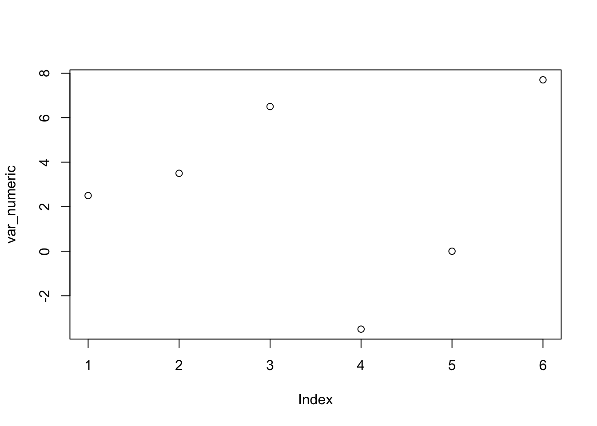

var_numeric <- c(2.5 ,3.5 ,6.5 , -3.5, 0 , 7.7)
var_integer <- c(2 ,3 ,6 , -3, 2, 9)
var_factor <- factor (c("alto","baixo","baixo", "alto", "alto", "baixo"))
var_character <- c("João","Rute","Pedro", "Filipa", "Ana", "Fatima")
var_log <- c(TRUE,TRUE,TRUE,FALSE,FALSE,TRUE)
var_integerNA <- c(2 ,3 ,NA , -3, NA, NA)LINGUAGEM
O ‘assignment operator’
O assignment operator (<-) é a ferramenta chave para a criação de objetos R.
Exemplos de criação de variáveis:
Exemplos de criação de uma dataframe:
DF <- data.frame (var_character,var_numeric,var_integer,var_factor,var_log,var_integerNA)
Objectos mais frequentes
Vectors
Vectores numeric
var_numeric[1] 2.5 3.5 6.5 -3.5 0.0 7.7Vectores integer
var_integer[1] 2 3 6 -3 2 9Vectores factor
var_factor[1] alto baixo baixo alto alto baixo
Levels: alto baixoVectores character
var_character[1] "João" "Rute" "Pedro" "Filipa" "Ana" "Fatima"Vectores lógico
var_log[1] TRUE TRUE TRUE FALSE FALSE TRUEDataframes
DF var_character var_numeric var_integer var_factor var_log var_integerNA
1 João 2.5 2 alto TRUE 2
2 Rute 3.5 3 baixo TRUE 3
3 Pedro 6.5 6 baixo TRUE NA
4 Filipa -3.5 -3 alto FALSE -3
5 Ana 0.0 2 alto FALSE NA
6 Fatima 7.7 9 baixo TRUE NATables
table (var_factor)var_factor
alto baixo
3 3 Plots
plot (var_numeric)
Operadores aritméticos
| Operador | Descrição |
|---|---|
| + | addition |
| - | subtraction |
| * | multiplication |
| / | division |
| ^ or ** | exponentiation |
| x %/% y | integer division 5%/%2 is 2 |
Operadores lógicos
| Operador | Descrição |
|---|---|
| < | less than |
| <= | less than or equal to |
| > | greater than |
| >= | greater than or equal to |
| == | exactly equal to |
| != | not equal to |
| !x | Not x |
| x | y |
| x & y | x E y |
| is.na(x) | testar se x tem NAs |
| %in% | “a %in% c(a, b, c)”: Is a in the group c(a, b, c)? |
” %in% is the only operator that does not do normal element-wise execution. %in% tests whether the value(s) on the left side are in the vector on the right side.” (Ver Grolemund 2014: 81)
Funções (básicas)
c(): combinar ou concatenar
c (25 , 33 , 30 , 42 , 26 , 28) [1] 25 33 30 42 26 28seq(): sequênciar
seq (1,6)[1] 1 2 3 4 5 6rep(): replicar
rep (2017, 6) # replicar 2017 6 vezes [1] 2017 2017 2017 2017 2017 2017- Outras funções comuns
| Função | Descrição |
|---|---|
| seq(from , to, by) | generate a sequence |
| rep(x, ntimes) | repeat x n times |
| cut(x, n) | divide continuous variable in factor with n levels |
| sort (x) | ordenar |
| length (x) | extensão |
cbind(objeto1, objeto2, …) # combina objetos como colunas
rbind(objeto1, objeto2, …) # combina objetos como linhas
Funções (variáveis)
length(DF$var_numeric)[1] 6sum(DF$var_numeric)[1] 16.7mean (DF$var_numeric)[1] 2.783333median(DF$var_numeric)[1] 3sort (DF$var_numeric) [1] -3.5 0.0 2.5 3.5 6.5 7.7table (DF$var_factor)
alto baixo
3 3 class (DF$var_numeric)[1] "numeric"class (DF$var_integer)[1] "numeric"class ( DF$var_factor)[1] "factor"class ( DF$var_character)[1] "character"
NAs
is.na(DF$var_integerNA)[1] FALSE FALSE TRUE FALSE TRUE TRUE!is.na(DF$var_integerNA)[1] TRUE TRUE FALSE TRUE FALSE FALSEtable (is.na(DF$var_integerNA) )
FALSE TRUE
3 3 table (DF$var_integerNA, exclude = FALSE)
-3 2 3 <NA>
1 1 1 3
Parêntesis rectos (variáveis)
DF$var_num[1] 2.5 3.5 6.5 -3.5 0.0 7.7DF$var_num [1] [1] 2.5DF$var_num [4] [1] -3.5DF$var_num [1:3][1] 2.5 3.5 6.5DF$var_num [2:5][1] 3.5 6.5 -3.5 0.0DF$var_num [4:1][1] -3.5 6.5 3.5 2.5DF$var_num [-1] # indice negativo[1] 3.5 6.5 -3.5 0.0 7.7DF$var_num [20] # fora do rango[1] NA
Funções (bases)
class (DF) # classe de objeto [1] "data.frame"nrow (DF) # numero de linhas [1] 6ncol (DF) # numero de colunas [1] 6dim(DF) # dimensão (linhas & colunas) [1] 6 6object.size(DF) # tamanho em bytes2472 bytesnames (DF) # nome das variáveis [1] "var_character" "var_numeric" "var_integer" "var_factor"
[5] "var_log" "var_integerNA"head (DF) # Primeiras 6 observações da base var_character var_numeric var_integer var_factor var_log var_integerNA
1 João 2.5 2 alto TRUE 2
2 Rute 3.5 3 baixo TRUE 3
3 Pedro 6.5 6 baixo TRUE NA
4 Filipa -3.5 -3 alto FALSE -3
5 Ana 0.0 2 alto FALSE NA
6 Fatima 7.7 9 baixo TRUE NAhead (DF, 13) # Primeiras 13 observações da base var_character var_numeric var_integer var_factor var_log var_integerNA
1 João 2.5 2 alto TRUE 2
2 Rute 3.5 3 baixo TRUE 3
3 Pedro 6.5 6 baixo TRUE NA
4 Filipa -3.5 -3 alto FALSE -3
5 Ana 0.0 2 alto FALSE NA
6 Fatima 7.7 9 baixo TRUE NAtail (DF) # últimas 6 observações da base var_character var_numeric var_integer var_factor var_log var_integerNA
1 João 2.5 2 alto TRUE 2
2 Rute 3.5 3 baixo TRUE 3
3 Pedro 6.5 6 baixo TRUE NA
4 Filipa -3.5 -3 alto FALSE -3
5 Ana 0.0 2 alto FALSE NA
6 Fatima 7.7 9 baixo TRUE NAtail (DF, 10) # últimas 10 observações da base var_character var_numeric var_integer var_factor var_log var_integerNA
1 João 2.5 2 alto TRUE 2
2 Rute 3.5 3 baixo TRUE 3
3 Pedro 6.5 6 baixo TRUE NA
4 Filipa -3.5 -3 alto FALSE -3
5 Ana 0.0 2 alto FALSE NA
6 Fatima 7.7 9 baixo TRUE NAsummary(DF) # sommario de cada variável da base var_character var_numeric var_integer var_factor
Length:6 Min. :-3.500 Min. :-3.000 alto :3
Class :character 1st Qu.: 0.625 1st Qu.: 2.000 baixo:3
Mode :character Median : 3.000 Median : 2.500
Mean : 2.783 Mean : 3.167
3rd Qu.: 5.750 3rd Qu.: 5.250
Max. : 7.700 Max. : 9.000
var_log var_integerNA
Mode :logical Min. :-3.0000
FALSE:2 1st Qu.:-0.5000
TRUE :4 Median : 2.0000
Mean : 0.6667
3rd Qu.: 2.5000
Max. : 3.0000
NA's :3 str (DF) # estrutura da base'data.frame': 6 obs. of 6 variables:
$ var_character: chr "João" "Rute" "Pedro" "Filipa" ...
$ var_numeric : num 2.5 3.5 6.5 -3.5 0 7.7
$ var_integer : num 2 3 6 -3 2 9
$ var_factor : Factor w/ 2 levels "alto","baixo": 1 2 2 1 1 2
$ var_log : logi TRUE TRUE TRUE FALSE FALSE TRUE
$ var_integerNA: num 2 3 NA -3 NA NA
Parêntesis (bases)
DF var_character var_numeric var_integer var_factor var_log var_integerNA
1 João 2.5 2 alto TRUE 2
2 Rute 3.5 3 baixo TRUE 3
3 Pedro 6.5 6 baixo TRUE NA
4 Filipa -3.5 -3 alto FALSE -3
5 Ana 0.0 2 alto FALSE NA
6 Fatima 7.7 9 baixo TRUE NADF [1 ,6 ] # linha 1 , coluna 6[1] 2DF [1 , ] # linha 1 , colunas todas var_character var_numeric var_integer var_factor var_log var_integerNA
1 João 2.5 2 alto TRUE 2DF [ ,6 ] # linhas todas, coluna 6[1] 2 3 NA -3 NA NADF [1:5, ] # linhas 1 a 5 , colunas todas var_character var_numeric var_integer var_factor var_log var_integerNA
1 João 2.5 2 alto TRUE 2
2 Rute 3.5 3 baixo TRUE 3
3 Pedro 6.5 6 baixo TRUE NA
4 Filipa -3.5 -3 alto FALSE -3
5 Ana 0.0 2 alto FALSE NADF [ , 3:6] # linhas todas , colunas 3 a 6 var_integer var_factor var_log var_integerNA
1 2 alto TRUE 2
2 3 baixo TRUE 3
3 6 baixo TRUE NA
4 -3 alto FALSE -3
5 2 alto FALSE NA
6 9 baixo TRUE NADF [1:3,4:6] var_factor var_log var_integerNA
1 alto TRUE 2
2 baixo TRUE 3
3 baixo TRUE NADF [c(1,2,3), c(4,5,6)] var_factor var_log var_integerNA
1 alto TRUE 2
2 baixo TRUE 3
3 baixo TRUE NADF [ ,-c(1,2)] # linhas todas, colunas todas menos 1 e 2 var_integer var_factor var_log var_integerNA
1 2 alto TRUE 2
2 3 baixo TRUE 3
3 6 baixo TRUE NA
4 -3 alto FALSE -3
5 2 alto FALSE NA
6 9 baixo TRUE NA
Gráficos
plot (data1$gas19)hist (data1$gas19)
boxplot (data1$gas19)
barplot(table (data1$exp19))